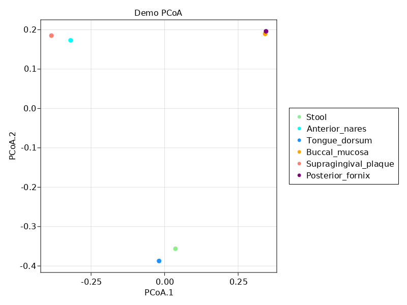
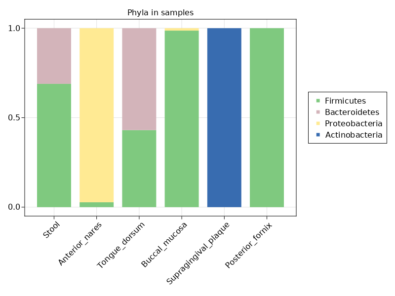

MetaPhlAn Tutorial with BiobakeryUtils.jl
- 🗒️ This tutorial is meant to be run in parallel with / mirror the official MetaPhlAn v3 tutorial
- ❓️ If you have questions about MetaPhlAn itself, please direct them to the bioBakery help forum
- 🤔 If you have questions about using the MetaPhlAn tools in julia, please open an issue, or start a discussion over on
Microbiome.jl! - 📔 For a function / type reference, jump to the bottom
Installation and setup
If you haven't already, check out the "Getting Started" page to install julia, create an environment,xd and install BiobakeryUtils.jl, and hook up or install the MetaPhlAn v3 command line tools.
This tutorial assumes:
- You are running julia v1.6 or greater
- You have activated a julia Project that has
BiobakeryUtils.jlinstalled - The
metaphlanpython package is installed, and accessible from yourPATH.
If any of those things aren't true, or you don't know if they're true, go back to "Getting Started" to see if you skipped a step. If you're still confused, please ask (see 3rd bullet point at the top)!
Bowtie2 database
The first time you run metaphlan, it needs to download and unpack the marker database. If you don't care where this goes, don't worry about it - by default it will go into a subdirectory of your conda environment.
If your home folder has limited space, or you want to install it to a particular location (eg a faster drive), you can either pass the kewword argument bowtie2db="/path/to/location" to all metaphlan commands, or set the environment variable METAPHLAN_BOWTIE2_DB.
Input files
Some example files you can use to run this tutorial are available from the MetaPhlAn repo, and can be downloaded using the Downloads standard library in julia:
julia> using Downloads: download
julia> base_url = "https://github.com/biobakery/biobakery/raw/master/demos/biobakery_demos/data/metaphlan3/input/";
julia> files = [
"SRS014476-Supragingival_plaque.fasta.gz",
"SRS014494-Posterior_fornix.fasta.gz",
"SRS014459-Stool.fasta.gz",
"SRS014464-Anterior_nares.fasta.gz",
"SRS014470-Tongue_dorsum.fasta.gz",
"SRS014472-Buccal_mucosa.fasta.gz"
];
julia> for file in files
download(joinpath(base_url, file), file)
end
julia> readdir()
9-element Vector{String}:
"Manifest.toml"
"Project.toml"
"SRS014459-Stool.fasta.gz"
"SRS014464-Anterior_nares.fasta.gz"
"SRS014470-Tongue_dorsum.fasta.gz"
"SRS014472-Buccal_mucosa.fasta.gz"
"SRS014476-Supragingival_plaque.fasta.gz"
"SRS014494-Posterior_fornix.fasta.gz"Run a single sample
For convenience, this package has the metaphlan() function, which can be used in your julia scripts to build and call the metaphlan command line tool.
For example, rather than call this from the shell:
$ metaphlan SRS014476-Supragingival_plaque.fasta.gz --input_type fasta > SRS014476-Supragingival_plaque_profile.txtyou can instead call this from the julia REPL:
julia> metaphlan("SRS014476-Supragingival_plaque.fasta.gz",
"SRS014476-Supragingival_plaque_profile.tsv"; input_type="fasta")The first time you run this command, metaphlan will download its database and build Bowtie2 indices for aligning marker genes. It may take a while... maybe go for a walk 🙂.
Output files
You can now load this profile using metaphlan_profile:
julia> mp = metaphlan_profile("SRS014476-Supragingival_plaque_profile.tsv"; sample="SRS014476")
CommunityProfile{Float64, Taxon, MicrobiomeSample} with 11 features in 1 samples
Feature names:
Bacteria, Actinobacteria, Actinobacteria...Corynebacterium_matruchotii, Rothia_dentocariosa
Sample names:
SRS014476This generates a CommunityProfile type from Microbiome.jl, which is a matrix-like object with MicrobiomeSamples as column headers, and Taxons as row headers.
The samples can be accessed with samples or samplenames:
julia> samples(mp)
1-element Vector{MicrobiomeSample}:
MicrobiomeSample("SRS014476", {})
julia> samplenames(mp)
1-element Vector{String}:
"SRS014476"Notice that in addition to the sample name ("SRS014476"), there's an additional field - that's a metadata dictionary that we can add values to.
julia> plaque = first(samples(mp))
MicrobiomeSample("SRS014476", {})
julia> set!(plaque, :STSite, "Supragingival Plaque")
MicrobiomeSample("SRS014476", {:STSite = "Supragingival Plaque"})The taxa (Microbiome.jl uses the generic term "features") can be accessed with features or featurenames:
julia> features(mp)
11-element Vector{Taxon}:
Taxon("Bacteria", :kingdom)
Taxon("Actinobacteria", :phylum)
Taxon("Actinobacteria", :class)
Taxon("Corynebacteriales", :order)
Taxon("Micrococcales", :order)
Taxon("Corynebacteriaceae", :family)
Taxon("Micrococcaceae", :family)
Taxon("Corynebacterium", :genus)
Taxon("Rothia", :genus)
Taxon("Corynebacterium_matruchotii", :species)
Taxon("Rothia_dentocariosa", :species)
julia> featurenames(mp)
11-element Vector{String}:
"Bacteria"
"Actinobacteria"
"Actinobacteria"
"Corynebacteriales"
"Micrococcales"
"Corynebacteriaceae"
"Micrococcaceae"
"Corynebacterium"
"Rothia"
"Corynebacterium_matruchotii"
"Rothia_dentocariosa"Run on multiple cores
Other keywords can be passed to metaphlan() as well. For example, to speed things up a bit, try nproc=4:
julia> metaphlan("SRS014459-Stool.fasta.gz",
"SRS014459-Stool_profile.tsv"; input_type="fasta", nproc=4)
[ Info: Running command: metaphlan SRS014459-Stool.fasta.gz SRS014459-Stool_profile.tsv --input_type fasta --nproc 4
# ... Run multiple samples
You can use julia to run metaphlan in a loop to do the rest of the files. Here, we find the output path by replacing .fasta.gz with _profile.tsv, then check if it exists already, and continue if it does (&& means "AND" - if isfile(prof) is true, then it will do the thing on the right).
julia> for f in files
prof = replace(f, ".fasta.gz"=>"_profile.tsv")
isfile(prof) && continue
metaphlan(f, prof; input_type="fasta", nproc=4)
end
┌ Info: Running command: metaphlan SRS014494-Posterior_fornix.fasta.gz SRS014494-Posterior_fornix_profile.tsv --input_type fasta
└ --nproc 4Merge outputs
There are several ways to merge these profiles into one large table. One way is to use merge_metaphlan_tables.py, which has a convenient wrapper, metaphlan_merge:
julia> profiles = filter(f-> contains(f, "profile"), readdir())
6-element Vector{String}:
"SRS014459-Stool_profile.tsv"
"SRS014464-Anterior_nares_profile.tsv"
"SRS014470-Tongue_dorsum_profile.tsv"
"SRS014472-Buccal_mucosa_profile.tsv"
"SRS014476-Supragingival_plaque_profile.tsv"
"SRS014494-Posterior_fornix_profile.tsv"
julia> metaphlan_merge(profiles, "merged_abundance_table.tsv")
Process(`merge_metaphlan_tables.py -o merged_abundance_table.tsv SRS014459-Stool_profile.tsv SRS014464-Anterior_nares_profile.tsv S
RS014470-Tongue_dorsum_profile.tsv SRS014472-Buccal_mucosa_profile.tsv SRS014476-Supragingival_plaque_profile.tsv SRS014494-Posteri
or_fornix_profile.tsv`, ProcessExited(0))Then, you can load it as a CommunityProfile using metaphlan_profiles():
julia> mps = metaphlan_profiles("merged_abundance_table.tsv"; samplestart=3)
CommunityProfile{Float64, Taxon, MicrobiomeSample} with 62 features in 6 samples
Feature names:
Bacteria, Actinobacteria, Actinobacteria...Moraxella, Moraxella_nonliquefaciens
Sample names:
SRS014494-Posterior_fornix, SRS014476-Supragingival_plaque, SRS014472-Buccal_mucosa...SRS014464-Anterior_nares, SRS014459-StoolNote, the samplestart=3 argument is necessary because the second column file generated by merge_metaphlan_tables.py contains NCBI taxonomy IDs.
An alternative is to load each individual sample as a CommunityProfile, and then merge them with commjoin:
julia> mps2 = commjoin([metaphlan_profile(p) for p in profiles]...)
CommunityProfile{Float64, Taxon, MicrobiomeSample} with 62 features in 6 samples
Feature names:
Bacteria, Firmicutes, Bacteroidetes...Lactobacillus_crispatus, Lactobacillus_iners
Sample names:
SRS014459-Stool_profile, SRS014464-Anterior_nares_profile, SRS014470-Tongue_dorsum_profile...SRS014476-Supragingival_plaque_profile
, SRS014494-Posterior_fornix_profileIf you'd like that saved to disk, you can use CSV.jl:
julia> using CSV
julia> CSV.write("merged_abundance_table2.tsv", mps2)
"merged_abundance_table2.tsv"One benefit of doing it the later way is that as we're loading the tables, we can attach some metadata to them. For example:
julia> my_profiles = [] # an empty vector
Any[]
julia> for p in profiles
file_wo_ext = first(splitext(p))
(srs, site) = split(file_wo_ext, '-')
site = replace(site, "_profile"=> "")
sample = MicrobiomeSample(srs)
set!(sample, :STSite, site)
set!(sample, :filename, p)
push!(my_profiles, metaphlan_profile(p; sample))
end
julia> mps3 = commjoin(my_profiles...)
CommunityProfile{Float64, Taxon, MicrobiomeSample} with 62 features in 6 samples
Feature names:
Bacteria, Firmicutes, Bacteroidetes...Lactobacillus_crispatus, Lactobacillus_iners
Sample names:
SRS014459, SRS014464, SRS014470...SRS014476, SRS014494
julia> metadata(mps3)
6-element Vector{NamedTuple{(:sample, :STSite, :filename), Tuple{String, String, String}}}:
(sample = "SRS014459", STSite = "Stool", filename = "SRS014459-Stool_profile.tsv")
(sample = "SRS014464", STSite = "Anterior_nares", filename = "SRS014464-Anterior_nares_profile.tsv")
(sample = "SRS014470", STSite = "Tongue_dorsum", filename = "SRS014470-Tongue_dorsum_profile.tsv")
(sample = "SRS014472", STSite = "Buccal_mucosa", filename = "SRS014472-Buccal_mucosa_profile.tsv")
(sample = "SRS014476", STSite = "Supragingival_plaque", filename = "SRS014476-Supragingival_plaque_profile.tsv")
(sample = "SRS014494", STSite = "Posterior_fornix", filename = "SRS014494-Posterior_fornix_profile.tsv")See Microbiome.jl docs for more info on metadata and CommunityProfiles)
Analyze Results
With the profile loaded, you can use many julia packages to analyze or visualize the results. Inside the CommunityProfile is a sparce matrix, which you can access with abundances. This means that all of julia's powerful statistics and ML libraries are easy to use with your microbiome data.
For more information about indexing and accessing components of the data, see the Microbiome.jl docs
Performing PCoA analysis
To demonstrate this, we'll use a couple of other julia packages to perform and plot a principal coordinates analysis (PCoA): Distances.jl and MulitvariateStats.jl.
(Actually some convenent functions for this are re-exported from Microbiome.jl eg braycurtis and pcoa – this is just meant to show how easy it is to use the underlying data for whatever you like)
You can install these by opening the Pkg REPL (type ']') and using add:
(my_project) pkg> add MultivariateStats Distances
Resolving package versions...
Updating `~/my_project/Project.toml`
[b4f34e82] + Distances v0.10.4
[6f286f6a] + MultivariateStats v0.8.0
No Changes to `~/my_project/Manifest.toml`
julia> # type <backspace> to get back to normal REPL
julia> using MultivariateStats
julia> using DistancesSince abundances gives us a normal matrix, we can easily use all the power of other julia packages to do analysis. Here, we'll create a distance matrix use Bray-Curtis dissimilarity, and then do multi dimensional scaling to get our PCoA ordination[note].
julia> dm = pairwise(BrayCurtis(), abundances(mps3), dims=2) # parwise distances of columns (dimension 2)
6×6 Matrix{Float64}:
0.0 0.853268 0.662373 0.758712 0.857143 0.758712
0.853268 0.0 0.845517 0.841645 0.857143 0.845517
0.662373 0.845517 0.0 0.77874 0.857143 0.787196
0.758712 0.841645 0.77874 0.0 0.857143 0.461648
0.857143 0.857143 0.857143 0.857143 0.0 0.857143
0.758712 0.845517 0.787196 0.461648 0.857143 0.0
julia> pc = fit(MDS, dm, distances=true)
Classical MDS(indim = NaN, outdim = 5)For plotting, I use Makie, but there are many other options.
(my_project) pkg> add CairoMakie
# ...
julia> using CairoMakie
julia> sites = [m.STSite for m in metadata(mps3)]
6-element Vector{String}:
"Stool"
"Anterior_nares"
"Tongue_dorsum"
"Buccal_mucosa"
"Supragingival_plaque"
"Posterior_fornix"
julia> clrs = [:lightgreen, :cyan, :dodgerblue, :orange, :salmon, :purple]
6-element Vector{Symbol}:
:lightgreen
:cyan
:dodgerblue
:orange
:salmon
:purple
julia> loads = sqrt.(pc.λ)' .* projection(pc) # loadings for pcoa, columns are axes
julia> fig, ax, plt = scatter(loads[:,1], loads[:, 2], color=clrs,
axis=(
xlabel="PCoA.1",
ylabel="PCoA.2",
title="Demo PCoA"
))
julia> leg = Legend(fig[1,2], [MarkerElement(color = c, marker=:circle) for c in clrs], sites)
Legend()
julia> fig
Stacked bar
One more example - let's plot the proportion of different phyla in each sample. First, we'll filter the table to keep only rows that contain phyla. The filter acts on a CommunityProfile by applying the predicate to the features of the profile.
julia> phyl = filter(t-> taxrank(t) == :phylum, mps3)
CommunityProfile{Float64, Taxon, MicrobiomeSample} with 4 features in 6 samples
Feature names:
Firmicutes, Bacteroidetes, Proteobacteria, Actinobacteria
Sample names:
SRS014459, SRS014464, SRS014470...SRS014476, SRS014494julia> phylumnames = featurenames(phyl)
4-element Vector{String}:
"Firmicutes"
"Bacteroidetes"
"Proteobacteria"
"Actinobacteria"
julia> fig2 = Figure()
julia> ax2 = Axis(fig2[1,1], title="Phyla in samples", xticks=(1:nsamples(phyl), sites));
julia> ax2.xticklabelrotation = π / 4 # rotations are in radians, type 'π' by doing `\pi<tab>`
0.7853981633974483
julia> y = Float64[]
Float64[]
julia> for sample in samples(phyl)
abs = abundances(phyl[:, sample])
abs = abs ./ sum(abs)
append!(y, abs)
end
julia> x = repeat(1:nsamples(phyl), inner=nfeatures(phyl))
24-element Vector{Int64}:
1
1
1
1
2
2
⋮
5
5
6
6
6
6
julia> sitenums = repeat(1:nfeatures(phyl), outer=nsamples(phyl))
24-element Vector{Int64}:
1
2
3
4
1
2
⋮
3
4
1
2
3
4
julia> barplot!(ax2, x, y, stack=sitenums,
color=sitenums, colormap=:Accent_5)
Combined{Makie.barplot, Tuple{Vector{Point{2, Float32}}}}
julia> leg = Legend(fig2[1,2], [MarkerElement(color = c, marker=:rect) for c in to_colormap(:Accent_5, 4)], phylumnames)
Legend()
julia> fig2
Functions and Types
BiobakeryUtils.metaphlan — Methodmetaphlan(inputfile, outputfile; kwargs...)Run metaphlan command line tool on inputfile, creating outputfile. Requires metaphlan to be installed and accessible in the PATH (see Getting Started).
metaphlan options can be passed via keyword arguments. For example, if on the command line you would run:
$ metaphlan some.fastq.gz output/some_profile.tsv --input_type fastq --nproc 8using this function, you would write:
metaphlan("some.fastq.gz", "output/some_profile.tsv"; input_type="fastq", nproc=8)Note: the input_type keyword is required.
Set the environmental variable "METAPHLAN_BOWTIE2_DB"to specify the location where the markergene database is/will be installed, or passbowtie2db = "some/path"` as a keyword argument.
BiobakeryUtils.metaphlan_merge — Methodmetaphlan_merge(paths, outputfile; kwargs...)Run merge_metaphlan_tables command line tool on the files in paths, creating outputfile. Requires metaphlan to be installed and accessible in the PATH (see Getting Started).
BiobakeryUtils.metaphlan_profile — Functionmetaphlan_profile(path::AbstractString, rank::Union{Int, Symbol}=:all; sample::AbstractString=basename(first(splitext(path))))Creates a CommunityProfile from a MetaPhlAn output file. Can select data according to taxonomic rank. If rank not given, all data is used. Sample name of the CommunityProfile can be specified by passing a sample argument. If name not given, the name of the file becomes the Sample name.
Levels may be given either as numbers or symbols:
1=:kingdom2=:phylum3=:class4=:order5=:family6=:genus7=:species8=:subspecies
BiobakeryUtils.metaphlan_profiles — Functionmetaphlan_profiles(path::AbstractString, rank::Union{Int, Symbol}=:all; keepunidentified=false)Reads in MetaPhlAn profiles from a merged table into a CommunityProfile. Can select data according to taxonomic rank. If rank not given, all data is used. Set keepunidentified flag to true to keep UNIDENTIFIED data.
Levels may be given either as numbers or symbols:
1=:kingdom2=:phylum3=:class4=:order5=:family6=:genus7=:species8=:subspecies
BiobakeryUtils.metaphlan_profiles — Functionmetaphlan_profiles(paths::Array{<:AbstractString, 1}, rank::Union{Int, Symbol}=:all)Combines MetaPhlAn profiles from multiple single tables into a CommunityProfile.
BiobakeryUtils.parsetaxa — Methodparsetaxa(taxstring::AbstractString; throw_error=true)Given a string representing taxonmic ranks as formatted by MetaPhlAn (eg "kBacteria|pProteobacteria..."), separates taxonomic ranks into elements of type Taxon in a vector.
BiobakeryUtils.parsetaxon — Methodparsetaxon(taxstring::AbstractString, rank::Union{Int, Symbol})Finds given taxonomic rank in a string (as formatted by MetaPhlAn (eg "kBacteria|pProteobacteria...")) and returns the name and taxonomic rank as a Taxon. If taxon rank not given, function will return the most specific (lowest) taxonomic rank available.
Levels may be given either as numbers or symbols:
1=:kingdom2=:phylum3=:class4=:order5=:family6=:genus7=:species8=:subspecies
- noteRight now, the table contains all taxonomic levels, so this doesn't make much sense. For a real analysis, you'd probably want to restrict to a single rank (eg species). You can easily do this with
filter:spec = filter(t-> taxrank(t) == :species, mps3). We're not doing this for the demo dataset, because there's not any taxonomic overlap at the species level.